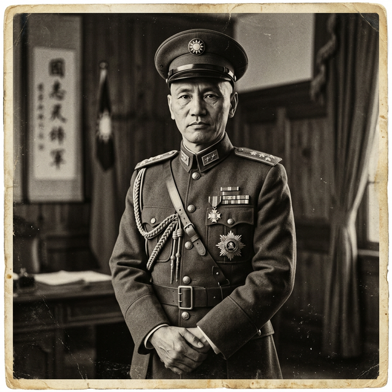

蔣介石
民族救星還是獨裁者？
在台灣早期的教科書中，他是「民族救星」；在中共史觀裡，他是「獨裁者」。剝開這兩極化的神話，真實的蔣介石是一位極度堅韌卻又冷酷的民族主義者。他在內憂外患中完成了形式上的統一，在抗戰中拖垮了日本，卻也因其專制腐敗而失去天下。
📂 檔案閱覽室
真實史實：歷史現場的另一面
點擊下方卡片，對比傳統歷史課本與被掩蓋的歷史真相。
歷史課本說： 蔣委員長英明神武，單靠國民政府的力量帶領中國打贏八年抗戰，是無瑕的民族英雄。
點擊解密檔案 ➔解密真相： 勝利很大程度依賴同盟國參戰。且為了阻擋日軍，蔣下令「花園口決堤」與「長沙大火」，焦土政策雖買到時間，卻導致數十萬平民溺斃、燒死，數百萬人流離失所。英雄背後是百姓無盡血淚。
點擊翻回課本歷史課本說： 大陸淪陷是因為蘇俄支援共匪與美國背信。國民黨是無辜的受害者。
點擊解密檔案 ➔解密真相： 根本原因在於國府內部的極度腐敗與經濟崩潰。「金圓券」強行兌換導致惡性通膨，徹底消滅了城市中產階級財產。失去底層農民與精英的支持，才是崩潰主因。
點擊翻回課本歷史檔案館藏閱讀室

蔣介石
(1887 - 1975)
威權與民族主義者國家統一與抗戰的領袖
清黨與武力統一： 1927年發動「四一二事件」血腥清黨，確立領導權。他透過北伐與中原大戰，完成了形式上的統一，但軍閥擁兵自重，種下指揮不靈的火根。
抗戰的堅韌與代價： 面對入侵，前期採取「攘外必先安內」爭取時間。抗戰爆發後展現絕不投降意志，用空間換時間，但也因對軍隊微觀干預導致無謂犧牲。
威權與轉進台灣： 退台後成功進行地改並穩定經濟；但長達數十年的戒嚴與白色恐怖，鎮壓異議分子，建立高度個人獨裁體系。
📚 關鍵參考史料
- 黃仁宇，《從大歷史的角度讀蔣介石日記》
- 陶涵 (Jay Taylor)，《蔣介石與現代中國的奮鬥》
命運結算
你的最終歷史定位：